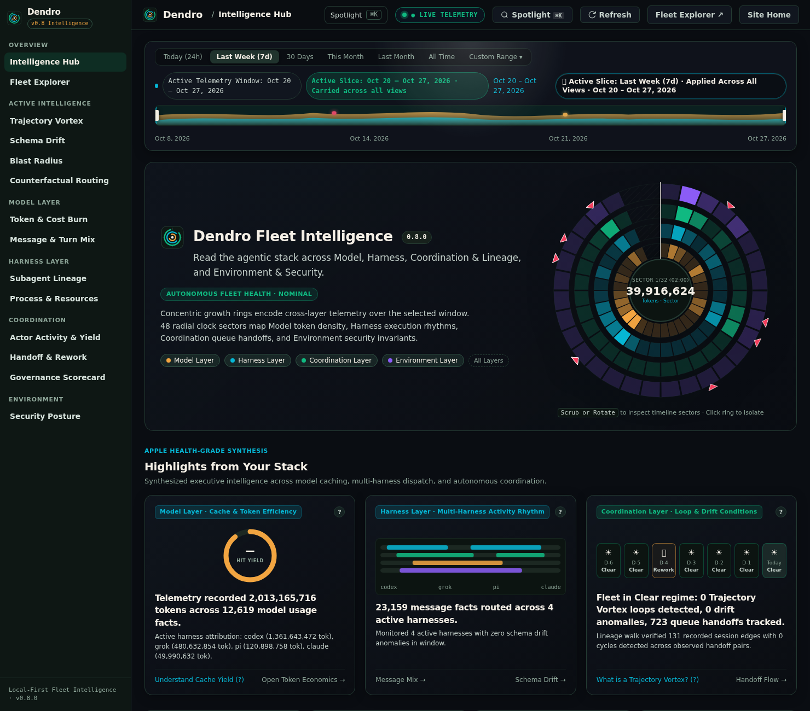
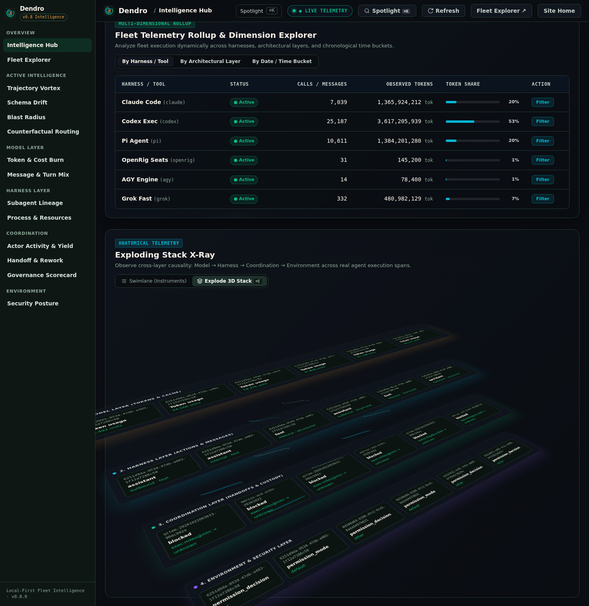
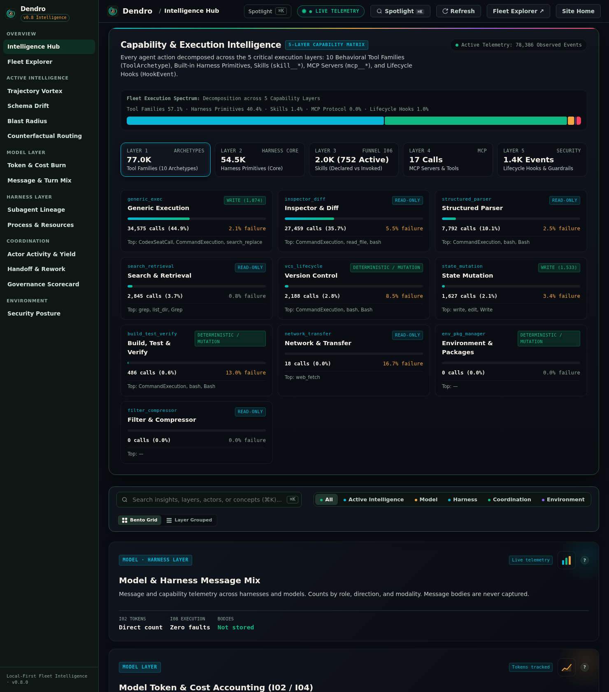
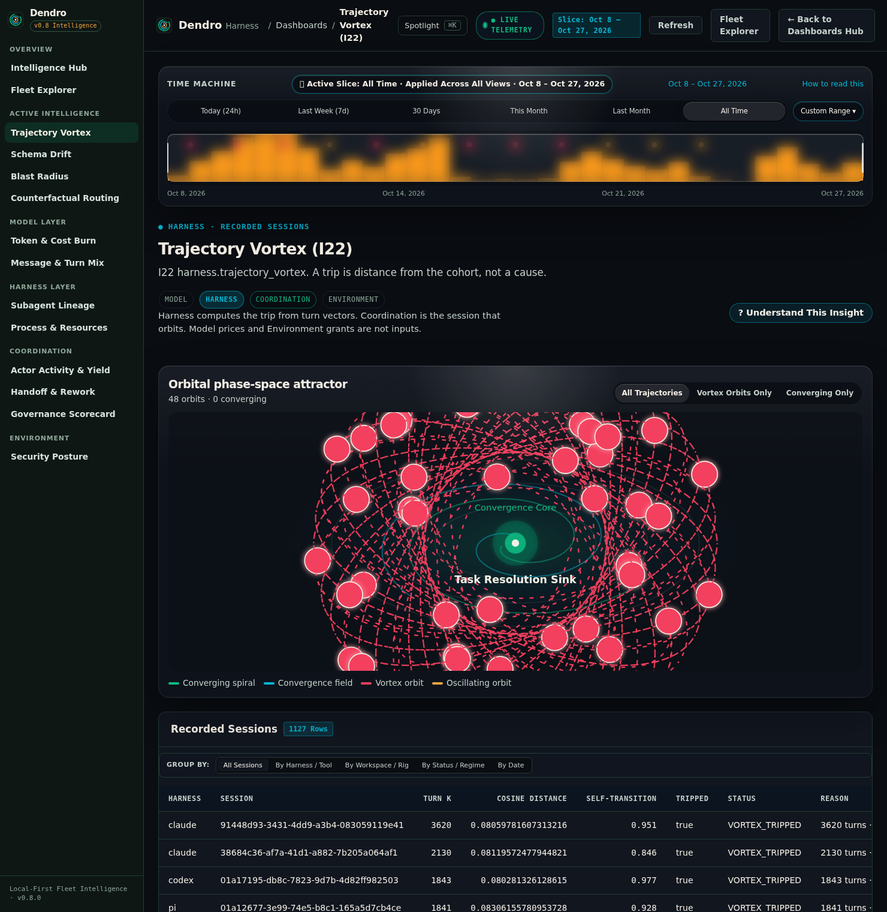
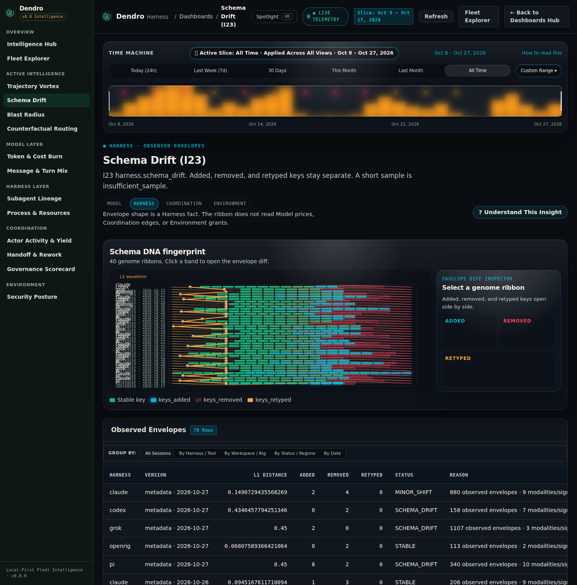
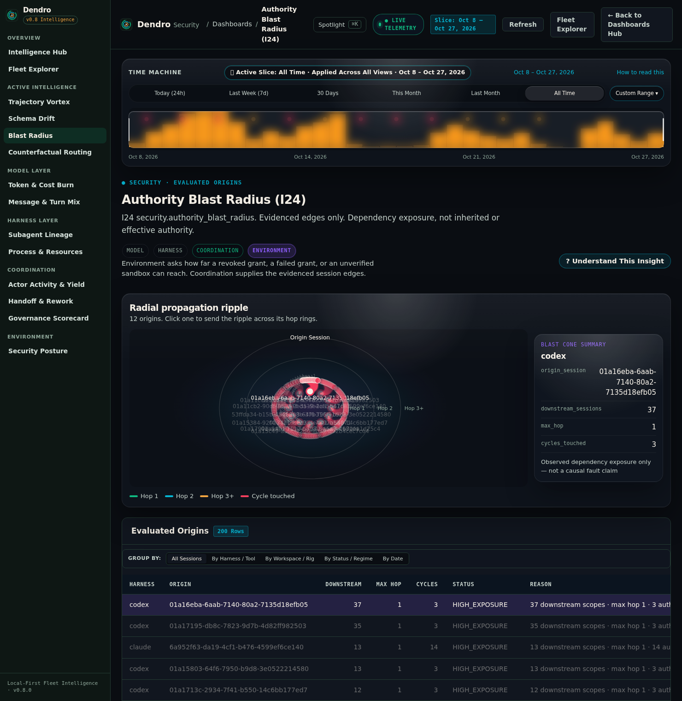
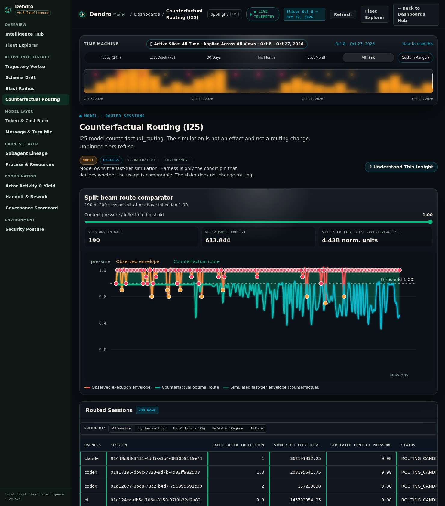
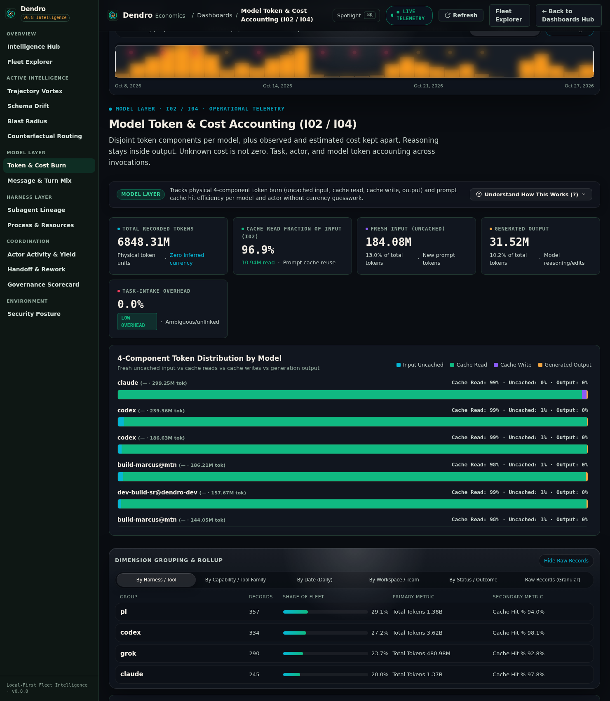

The Local-First Flight Recorder & Operational Intelligence Studio · Source-Available (FSL-1.1-Apache-2.0)
See why your AI agents succeed, stall, or burn budget.
The Local-First Flight Recorder, Causal X-Ray & Operational Intelligence Studio for AI Coding Workflows.
Six open agent terminals look productive—even when four are waiting on a handoff and two are trapped in a ping-pong rework loop. Written in Rust and powered by an embedded columnar DuckDB engine, Dendro reconstructs existing local session logs out-of-band into an instrument-grade causal X-ray across sessions, actors, harnesses, and tools—with zero prompts, zero secrets, and zero cloud exfiltration.
Explore Live Studio Dashboards →
Open Offline Fleet Viewer →
$
cargo install --git https://github.com/smota/dendro.git dendro-cli
Claude Code
OpenAI Codex
Google AGY
xAI Grok CLI
Pi
Multi-Agent Orchestrators optional adapters
● ILLUSTRATIVE SNAPSHOT







Section 03 · The Core Operational Shift
Activity is easy to fake. Flow is what ships software.
When engineering teams deploy autonomous coding agents across multiple terminal panes, isolated Git worktrees, or multi-actor topologies, execution becomes an opaque black box. Dendro replaces guesswork with retrospective causal truth.
Terminals scroll rapidly while delivery quietly stalls
- Unobserved handoff stalls: A builder actor finishes a slice and waits 45 minutes for reviewer acceptance while holding locks—looking identical to active progress.
- Ping-pong rework loops: Two actors bounce a failing task back and forth four times, exhausting context windows and burning uncached tokens without converging.
- Opaque token spikes: Cloud billing alerts arrive after a 400% token spike, unable to distinguish cache-invalidation bleed from runaway tool retry loops.
Five Disjoint Activity Bands & Multi-Hop Lineage
- Five Disjoint Agent Activity Bands: Every observed actor interval is partitioned into
active,waiting_on_human,idle_with_work(Handoff Wait),idle_without_work(Cleanly Parked), andunknown(Stalled / Rework / Unobserved). - Multi-Hop Sub-Agent Lineage (
I09): Trace spawn, delegate, handoff, return, and retry edges across sessions and harnesses. - 100% Local-First DuckDB: Passive out-of-band flight recording with sub-15ms queries and zero prompt or secret persistence.
Empirical Timeline Partitioning
Null ≠ Zero · Unknown Intervals Explicitly Hatched
The Five Disjoint Activity Bands (Measure Flow, Handoff Wait & Rework)
| Dimension | Cloud LLM Tracers (LangSmith, Arize, Helicone, Datadog) | Raw Local Logs (JSONL files, grep, jq, bash) |
Dendro Local-First Studio |
|---|---|---|---|
| 1. Data Privacy & Storage | Transmits prompts, outputs, and proprietary code to third-party cloud servers. | Local on disk, but unindexed, unredacted, and sprawling across hidden directories. | 100% Local-First DuckDB. Zero prompts, thoughts, or secrets ever persisted or transmitted. |
| 2. Execution Overhead | Sits in the live runtime network path; adds 30–120ms proxy latency per prompt. | Zero runtime latency (passive file append). | Zero runtime overhead. Out-of-band passive flight recording; never touches the prompt wire. |
| 3. Multi-Agent Lineage | Truncates at single LLM spans; blind to terminal handoffs, queues, and worktrees. | Manual cross-referencing of UUIDs and timestamps across disparate files. | Full Causal Graph (I09). Multi-hop sub-agent lineage, queue wait (I12), and return loops. |
| 4. Cross-Layer Breadth | Model layer only (tokens and latency). Blind to OS resources, sandboxes, and tools. | Unstructured; requires brittle ad-hoc scripts to join across harnesses. | 4-Layer Unified Stack: Model + Harness + Coordination + Environment & Security. |
| 5. Query & Slicing Speed | Rate-limited cloud dashboards with multi-minute aggregation lag. | Slow linear jq scans taking minutes over gigabyte session logs. |
Sub-15ms local queries via vectorized columnar DuckDB, Ratatui TUI, and 12 Nao views. |
| 6. Loop & Anomaly Physics | Post-facto billing alerts after token budgets have already been exhausted. | Discovered only when a terminal freezes or rate limits trip. | Pre-Loop Distance Tripwires (I22) & structural Schema Drift gel-strips (I23). |
| 7. Cost & Licensing | $500–$3,000/mo per-user cloud SaaS subscriptions plus per-trace ingestion fees. | Free license, but high recurring engineering toil. | Free for Internal & Team Use (FSL-1.1-Apache-2.0) — converts to Apache-2.0 after 2 years. Runs on your own hardware forever. |
Section 04 · 4-Layer Radial Session Dial & Time Machine
4-Layer Radial Session Dial, Time Machine Scrubber & Telemetry Highlights.
Inspect your entire AI workflow at a glance: four concentric radial rings encode the Model, Harness, Coordination, and Environment layers across 48 time sectors, while anomaly markers pinpoint exact failure and rework events. Scrub across any time window or click a preset below to inspect the Core Health HUD.
Hover or click any concentric layer band, hatched null slice, or anomaly tripwire (I07, I08, I19, I23) to inspect its telemetry.
Interactive Core Health Readout
4 Architectural Layers · 48 Time Sectors · Anomaly Tripwires
Each radial band corresponds to one canonical layer of the AI execution stack. Quiet or unobserved intervals are rendered with diagonal hatch lines (url(#container-hatch))—honoring the Null ≠ Zero rule so missing coverage is never mistaken for idle actors.
ACTIVE LAYER / TRIPWIRE
All 4 Layers · Nominal
TIME WINDOW / SECTOR
Oct 20 – Oct 27, 2026 (48 Sectors)
ACTORS & HARNESSES
Claude Code · Codex · AGY · Grok · Pi
EVIDENCED TELEMETRY
96.9% Cache Read Yield · 5-Part Token Accounting
EPISTEMIC STATUS
status: ok (computed)
● Layer 1: Model (#F2A541)
● Layer 2: Harness (#06B6D4)
● Layer 3: Coordination (#10B981)
● Layer 4: Environment (#8B5CF6)
96.9% Cache Read Yield
Ratio-of-sums cache read efficiency across 5 disjoint token parts separates warm prefix reuse from uncached input bleed.
5 Native Coding Harnesses in Concert
Tracks turn pacing and message density across Claude Code, OpenAI Codex, Google AGY, xAI Grok CLI, and Pi.
0 Vortex Trips · Daily Loop Weather
7-day column strip reporting daily trajectory stability across 1,127 trajectories: clear convergence vs. action retry clusters.
D-6
CLEAR
CLEAR
D-5
CLEAR
CLEAR
D-4
I08
I08
D-3
CLEAR
CLEAR
D-2
CLEAR
CLEAR
D-1
I19
I19
NOW
OK
OK
Section 05 · Cross-Layer Causal Architecture (⌘E)
The 4-Layer Exploding Stack X-Ray.
Press ⌘E (or toggle below) to lift flat 2D swimlanes into an exploded 3D isometric stack. Vertical cubic Bezier threads trace temporal correlation from a Model token burst, through a Harness tool retry loop, into a Coordination queue wait, down to the OS process RSS footprint.
01 · MODEL LAYER (#F2A541)
I01 · I02 · I03 · I04 · I05 · I25
5-Part Token Breakdown (input_uncached, cache_write, cache_read, output, nested reasoning), 96.9% cache read yield, and Counterfactual Routing (I25).
02 · HARNESS LAYER (#06B6D4)
I06 · I07 · I08 · I22 · I23
Capability Funnel (I06), Context Window Pressure (I07), Tool Execution Loops (I08), Trajectory Vortex (I22), and Schema Drift (I23).
03 · COORDINATION LAYER (#10B981)
I09 · I10 · I11 · I12 · I19
Sub-Agent Lineage Graphs (I09), Work Duration & Concurrency (I10), Queue Wait Friction (I12), 5 Disjoint Activity Bands, and Acceptance Yield (I19).
04 · ENVIRONMENT & SECURITY LAYER (#8B5CF6)
I13 · I14 · I15 · I16 · I17 · I18 · I24
OS Process CPU Deltas & Max Sampled RSS (I14), Sandbox Isolation (I16), Secret Scrubbing (I18), and 8-Hop Authority Blast Radius (I24).
Section 06 · 5-Layer Capability & Execution Studio
Capability & Execution Studio: From Raw Primitives to Verified Skills.
Dendro classifies every agent action through its 5-Layer Capability Matrix—mapping execution across 10 Behavioral Tool Families, native harness primitives, MCP server tools, lifecycle guardrails, and the FUNNEL I06 Declared → Loaded → Verified Invoked Skills funnel.
PROPORTION SPECTRUM BAR · 10 BEHAVIORAL TOOL FAMILIES & NATIVE HARNESS PRIMITIVES
FUNNEL I06: Declared → Loaded → Verified Invoked Skills
Family 01
Shell / Exec
21,840
Sandboxed CLI, cargo, git & test execution
Family 02
Read / Inspect
18,920
Source file reads & context grounding
Family 03
Edit / Patch
11,410
Surgical AST & diff mutations
Family 04
Search / Grep
9,150
Ripgrep, glob & symbol discovery
Family 05
Subagent Spawn
4,620
Delegated bounded worker processes
Family 06
MCP Call
3,890
Model Context Protocol server tools
Family 07
Skill Load
2,740
Procedural SKILL.md activations (
I06)
Family 08
Web / Fetch
1,680
Documentation & HTTP retrieval
Family 09
Task / Queue
1,590
Handoff routing & ledger state updates
Family 10
Governance / Gate
1,150
Reviewer verdicts & approval checks
5-Layer Capability Taxonomy
FUNNEL I06 · harness.capability_funnel
Declared vs. Loaded vs. Verified Invoked Skills
- Layer 1 — 10 Behavioral Tool Families: Cross-harness normalization of every agent action.
- Layer 2 — Native Harness Primitives:
54.5kbuilt-in verbs (Bash,Read,Edit,Write,Grep,Glob,Task). - Layer 3 — Skills Funnel (
FUNNEL I06): Separates skills merely declared in config from skills loaded into context and skills effectively invoked. - Layer 4 — MCP Servers & Tools: Call counts, latency distributions, and failure rates—never capturing private payloads.
- Layer 5 — Lifecycle Hooks & Guardrails: Pre/post execution policy checks counted deterministically.
6 Zero-Latency Multi-Dimensional Group-By Modes
Embedded across the Hub and all 12 views. Click any dimension to preview the rollup structure:
Claude Code · Bash / Edit / Read34,120 calls · 97.1% cache
OpenAI Codex · exec / apply_patch21,450 calls · 96.8% cache
Google AGY · run_command / read_file14,880 calls · 96.5% cache
Shell / Exec + Read / Inspect40,760 calls (53.0% share)
Edit / Patch + Search / Grep20,560 calls (26.7% share)
Spawn + MCP + Skill Load (FUNNEL I06)11,250 calls (14.6% share)
2026-10-27 (Today)97.4% cache yield · 5-part accounting
2026-10-2696.8% cache yield · 0 vortex trips
76-Day Rolling Cohort Baseline96.9% cache yield · multi-harness fleet
Workspace: dendro (Rust / DuckDB)428 sessions · 0 vortex trips
Workspace: movetheneedle389 sessions · 96.9% cache yield
Workspace: meshloop310 sessions · FUNNEL I06 active
First-Pass Clean Completion (I19)81.4% of evaluated work items
Multi-Pass Return / Rework18.6% (flagged for review)
Unsettled / In-Flight Actions (I08)Excluded from failure denominator
Fact Tables Materializedusage_facts · tool_facts · message_facts
Lineage & Security Tablessession_edges · security_facts
Redaction Guarantee (I18)0 prompts · 0 secrets · 0 paths
Section 07 · Active Intelligence Consoles (I22–I25)
Four scientific consoles with the epistemic limit printed on the glass.
Every console pairs empirical DuckDB evidence with explicit mathematical guardrails—clearly distinguishing observed fleet telemetry from counterfactual simulations across arbitrary sliding windows (?window=7d or YYYY-MM-DD..YYYY-MM-DD).
I22 · harness.trajectory_vortex
Phase-Space Loop Detection · Min 5 Cohort Guard
Trajectory Vortex: Orbital Phase-Space Attractor
Spot when an agent stops converging and starts spiraling—plotting multi-turn trajectories in an elliptical phase space (FLOAT[32] cosine distance and turn-transition dynamics) so runaway tool retry loops pull orbits outward before token budgets burn. A vortex trip is an empirical alert, not a proved root cause.
I23 · harness.schema_drift
Daily Metadata Cohort Fingerprints
Schema Drift: Biological DNA Fingerprint Gel-Strip
Track structural metadata shifts across Claude Code, Codex, AGY, Grok CLI, and Pi updates as a biological DNA gel-strip—measuring VARIANT envelope L1 distance (keys_added, keys_removed, keys_retyped) across daily cohorts so silent harness upgrades never blindside your pipelines. Structural drift is not a compatibility verdict.
I24 · security.authority_blast_radius
8-Hop Evidenced Reachability Cone
Authority Blast Radius: Radial Propagation Ripple Graph
Trace how far a revoked permission, failed tool call, or compromised credential propagates across multi-hop sub-agent delegation chains—walking evidenced session_edges and security_facts authority scopes up to an 8-hop ceiling. Dependency exposure does not grant or imply inherited authority.
I25 · model.counterfactual_routing
SIMULATED TIER TOTAL (COUNTERFACTUAL)
Counterfactual Routing: Split-Beam Route Comparator
Test "what-if" model routing policies against your real workload history before changing a single production setting. Evaluates pinned pricing tiers and SIMULATED TIER TOTAL (COUNTERFACTUAL) fast-tier envelopes in normalized token units against a 128k context-pressure threshold. Simulation proxy, not a live routing mutation or financial guarantee.
Section 08 · Operator Assumption Explorer (Zero Cloud Benchmarks)
Capacity Scenario Calculator: Model Handoff Rework & Actor Load.
Explore how handoff return rates, token burn per mission, and engineering review loops interact across your active actors. All calculations run locally in your browser from your explicit slider inputs—never a synthetic ROI guarantee.
Expected Handoff Returns
6.25 expected returns
Diverted Rework Tokens
2.5M tokens
Recoverable Token Spend
$12.50 USD
Engineering Hours Reclaimed
2.5 hours / month
Fleet Capacity Unlocked
5%
Actor Workload Distribution
6.25 missions per actor / month, assuming an even workload.
Epistemic Boundary (Scenario Calculator ≠ Predicted ROI): All values above are direct arithmetic projections of your operator-supplied slider assumptions. Dendro never injects hidden cloud averages, synthetic productivity multipliers, or guaranteed savings claims.
Section 09 · 60-Second Quickstart, Terminal Cockpit & Epistemic Guardrails
One Rust binary. Terminal Cockpit, Loopback Studio & Semantic Oracle.
Install via Cargo or build directly from Git checkout. Point Dendro at the local session transcripts already on your disk—nothing ever leaves your machine.
60-Second CLI & Connected Studio Quickstart
Install & Launch the 6-Screen Ratatui TUI or Web Studio
# Path A: Install via Cargo (dendro on PATH)
cargo install --git https://github.com/smota/dendro.git dendro-cli
dendro cockpit
# (or from local checkout: cargo install --path crates/dendro-cli --locked)
# Path B: Or build and run from Git checkout (current)
git clone https://github.com/smota/dendro.git
cd dendro && cargo build --release --locked
./target/release/dendro cockpit
# Serve the Connected Web Studio on loopback (127.0.0.1:4242 only)
dendro dashboard --serve 127.0.0.1:4242 --site-dir ./site
# Run headless loopback daemon, pre-flight advisor & Nao semantic queries
dendro serve 127.0.0.1:4242
dendro advise
dendro ask "which handoff pairs had the highest return rate this week?"
Offline Fleet Explorer & Open JSON Schema
Inspect exported multi-agent runs in a single zero-dependency HTML file, or integrate with Dendro's open JSON schema.
Zero-Flicker Terminal Views & Strict Loopback Safety
dendro cockpit(6-Screen Ratatui TUI): Pure-Rust terminal interface with 6 keyboard-driven screens (Overview,Layers,Handoffs,Capabilities,Consoles,Inspection) and full L0–L3 insight drill-downs.dendro serve&dendro dashboard(127.0.0.1:4242): Binds strictly to local loopback (refusing non-local interfaces), streaming live SSE updates (/api/events) and DuckDB JSON queries (/api/query).dendro advise&dendro ask: Sub-15ms pull-only pre-flight health oracle and deterministic in-process Nao semantic router across 12 canonical SQL views (zero LLM query hallucination).
Mathematical & Philosophical Integrity
The 6 Mandatory Epistemic Honesty Commitments
Missingness is Never Fabricated
An unobserved interval or unmaterialized table is null (rendered with diagonal hatch marks or insufficient_evidence), never zero. Five exclusive status badges govern every view: ok, partial, insufficient_evidence, refused, and not_applicable.
Operational Cost Attribution Only
High token volume never implies high engineering output—a 20M token session may be a stuck rebase loop. Token accounting is strictly framed as 5-part cost and cache yield attribution.
Honest Cross-Layer Alignment
Vertical Bezier threads in the 4-Layer Stack X-Ray represent recorded temporal and structural correlation across Model, Harness, Coordination, and OS spans—never claiming mathematical proof of causation.
Observed Telemetry vs. Simulation
Consoles I22–I25 clearly distinguish observed telemetry from counterfactual simulation models, explicitly labeling SIMULATED TIER TOTAL (COUNTERFACTUAL) as a simulation proxy rather than a live router mutation.
Operator Assumptions, Not Benchmarks
The Capacity Scenario Calculator is an Operator Assumption Explorer with transparent arithmetic formulas—never a vendor ROI promise or invented "developer hours saved" claim.
Zero Prompts or Secrets Stored
Prompts, model responses, chain-of-thought, tool arguments, and error payloads are never persisted in DuckDB. Secret prefixes (sk-, ghp_, gho_, xai-, Bearer tokens) are scrubbed before storage.
Where Dendro Fits in the Move the Needle Stack
Parallel Execution, Governed SDLC & Local Flight Recording
Execution Partner · Build in Parallel
Meshloop
Execute parallel coding tasks inside isolated Git worktree sandboxes with Meshloop, then inspect repair turns, sub-agent lineage, and process RSS in Dendro.
Governance Partner · Plan & Accept
AgentFlow SDLC
Define engineering role boundaries and human acceptance gates with AgentFlow, and measure first-pass acceptance yield (I19) and handoff wait times in Dendro.
Context Partner · Local Identity
Holoself
Ground coding and executive agents in local, reviewable context with Holoself while Dendro verifies 100% local-first privacy and zero secret persistence across every session.
Built by Samuel Mota · Move the Needle
Why Dendro exists
Open source · FSL-1.1-Apache-2.0
Value
See where time, handoffs, rework, capabilities, and token budget actually go across your multi-agent AI coding sessions—using verifiable local DuckDB evidence instead of vanity productivity claims.
Strategy
Six open terminals look busy even when four agents are stalled on a handoff and two are looping. Dendro turns raw local session history into a 4-layer causal X-ray of where time, handoffs, and budget actually go.
Technical frontier
Reconstructs local session logs out-of-band across Claude Code, Codex, AGY, Grok CLI, and Pi (plus optional multi-agent orchestration adapters) into 4 architectural layers, 5 capability funnels, and 25 deterministic DuckDB insights.